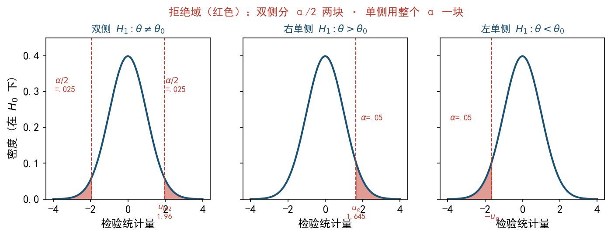
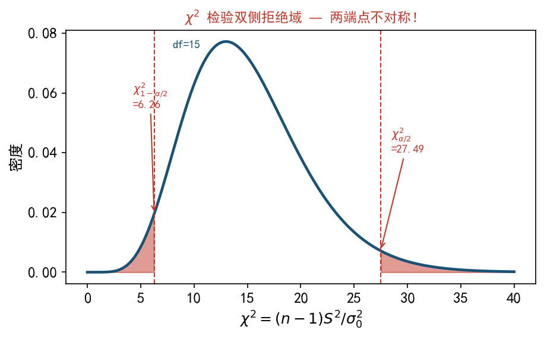

| $H_0$ 真 | $H_0$ 假 | |
|---|---|---|
| 接受 $H_0$ | 正确 | 第二类错误（弃假取真，记 $\beta$） |
| 拒绝 $H_0$ | 第一类错误（弃真取假，记 $\alpha$） | 正确（功效 $1-\beta$） |
$\alpha$ = 显著性水平 = 拒真概率。一般 $\alpha = 0.05$ 或 $0.01$。
P 值定义：在 $H_0$ 真时，得到"比观察样本更极端"统计量的概率。
规则：
P 值算法（按 $H_1$ 方向）：

U 检验（$\sigma$ 已知）：$U = \dfrac{\bar X-\mu_0}{\sigma/\sqrt n}\sim N(0, 1)$ 在 $H_0:\mu=\mu_0$ 下。
| $H_1$ | 拒绝域 |
|---|---|
| $\mu\neq\mu_0$ | $|U|>u_{\alpha/2}$ |
| $\mu<\mu_0$ | $U<-u_\alpha$ |
| $\mu>\mu_0$ | $U>u_\alpha$ |
t 检验（$\sigma$ 未知）：$T = \dfrac{\bar X-\mu_0}{S/\sqrt n}\sim t(n-1)$。
拒绝域同上，把 $u_\alpha$ 换成 $t_\alpha(n-1)$。
$\chi^2$ 检验（$\mu$ 未知）：$\chi^2 = \dfrac{(n-1)S^2}{\sigma_0^2}\sim\chi^2(n-1)$。
| $H_1$ | 拒绝域 |
|---|---|
| $\sigma^2\neq\sigma_0^2$ | $\chi^2<\chi^2_{1-\alpha/2}(n-1)$ 或 $\chi^2>\chi^2_{\alpha/2}(n-1)$ |
| $\sigma^2<\sigma_0^2$ | $\chi^2<\chi^2_{1-\alpha}(n-1)$ |
| $\sigma^2>\sigma_0^2$ | $\chi^2>\chi^2_\alpha(n-1)$ |
$\chi^2$ 不对称：双侧拒绝域两个端点不互为相反数。

$\mu_1 = \mu_2$（$\sigma_1, \sigma_2$ 已知）：$U = \dfrac{\bar X-\bar Y}{\sqrt{\sigma_1^2/n_1+\sigma_2^2/n_2}}\sim N(0, 1)$
$\mu_1 = \mu_2$（$\sigma$ 均未知但相等）：用合并方差 $S_w$，$T = \dfrac{\bar X-\bar Y}{S_w\sqrt{1/n_1+1/n_2}}\sim t(n_1+n_2-2)$
$\sigma_1^2 = \sigma_2^2$：$F = S_1^2/S_2^2\sim F(n_1-1, n_2-1)$
(1) μ 的 t 检验（P 值法）：
$T = \dfrac{\bar x-4}{s/\sqrt{25}} = \dfrac{0.02}{\sqrt{0.105}/5} = \dfrac{0.02}{0.0648}\approx 0.309$
双侧 P 值 $= 2P(|T(24)|>0.309)$。查表 $t_{0.05}(24)=1.711$，$0.309\ll 1.711$，所以 P 值 $\gg 0.10>0.05$。不拒绝 $H_0$。
(2) σ² 的 $\chi^2$ 检验（经典法，单侧）：
$\chi^2 = \dfrac{24\cdot 0.105}{0.1} = 25.2$
拒绝域 $\chi^2 > \chi^2_{0.05}(24) = 36.415$。$25.2 < 36.415$，不拒绝 $H_0$（方差未显著超过 0.1）。
结论：在 5% 显著性水平下，认为车轴生产符合规格要求。
$T = \dfrac{6.2-6.5}{0.5/\sqrt{16}} = \dfrac{-0.3}{0.125} = -2.4$
查表 $t_{0.025}(15) = 2.131$。$|T| = 2.4 > 2.131$ → 拒绝 $H_0$。
结论：在 5% 显著性水平下，认为电池实际寿命与 6.5 有显著差异。
$H_0:p\leq 0.05$ vs $H_1:p > 0.05$（单侧）。用 CLT 近似：$\hat p = 0.08$，
$U = \dfrac{0.08-0.05}{\sqrt{0.05\cdot 0.95/100}} = \dfrac{0.03}{0.0218}\approx 1.376$
查 $u_{0.05} = 1.645$。$U = 1.376 < 1.645$ → 不拒绝 $H_0$。次品率未显著超标。
样本空间分 $k$ 个互斥事件 $A_1, \ldots, A_k$，理论概率 $p_i$，实际频数 $n_i$：
$$\chi^2 = \sum_{i=1}^k\dfrac{(n_i-np_i)^2}{np_i}\sim\chi^2(k-1-r)$$$r$ 为已估计的参数个数。常用于"数据是否来自某分布"检验。
| 检验对象 | 条件 | 统计量 | 分布 |
|---|---|---|---|
| $\mu = \mu_0$ | $\sigma^2$ 已知 | $U = (\bar X-\mu_0)/(\sigma/\sqrt n)$ | $N(0,1)$ |
| $\mu = \mu_0$ | $\sigma^2$ 未知 | $T = (\bar X-\mu_0)/(S/\sqrt n)$ | $t(n-1)$ |
| $\sigma^2 = \sigma_0^2$ | $\mu$ 未知 | $\chi^2 = (n-1)S^2/\sigma_0^2$ | $\chi^2(n-1)$ |
| $\sigma^2 = \sigma_0^2$ | $\mu$ 已知 | $\chi^2 = \sum(X_i-\mu)^2/\sigma_0^2$ | $\chi^2(n)$ |
| $\mu_1 = \mu_2$ | $\sigma_1, \sigma_2$ 都未知 + 相等 | $T = (\bar X-\bar Y)/(S_w\sqrt{1/n_1+1/n_2})$ | $t(n_1+n_2-2)$ |
| $\sigma_1^2 = \sigma_2^2$ | — | $F = S_1^2/S_2^2$ | $F(n_1-1, n_2-1)$ |
| $H_1$ | U / t 拒绝域 | $\chi^2$ 拒绝域 |
|---|---|---|
| $\theta\neq\theta_0$（双侧） | $|T|>t_{\alpha/2}$ | $\chi^2<\chi^2_{1-\alpha/2}$ 或 $>\chi^2_{\alpha/2}$ |
| $\theta>\theta_0$（右单侧） | $T>t_\alpha$ | $\chi^2>\chi^2_\alpha$ |
| $\theta<\theta_0$（左单侧） | $T<-t_\alpha$ | $\chi^2<\chi^2_{1-\alpha}$ |